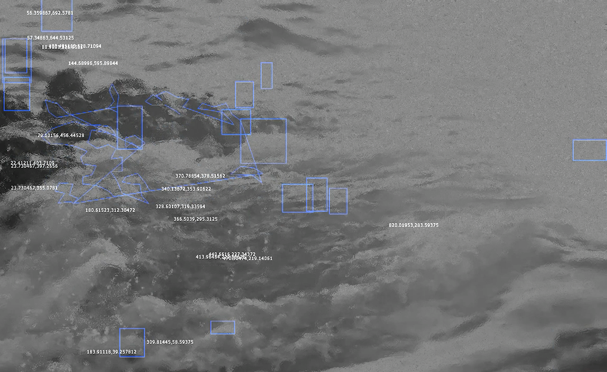
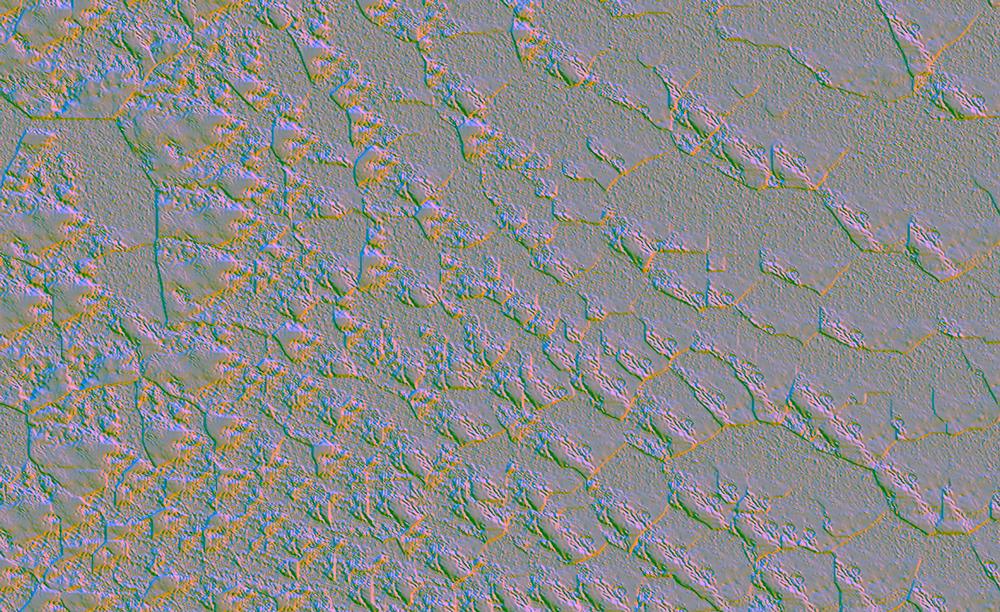
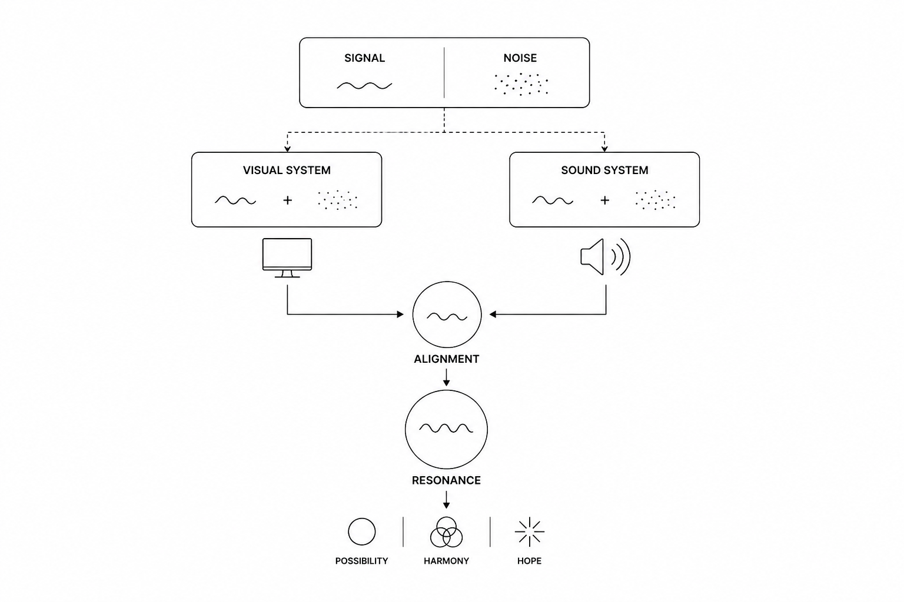
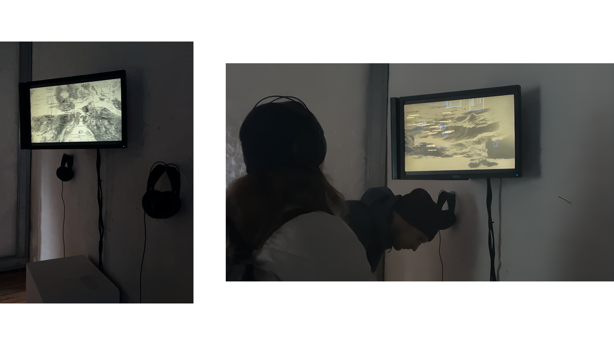

Rhythm Perception is an audiovisual system that explores how resonance emerges between consciousness and unconsciousness through signal, noise, visual, and sound.
Concept / Visual System / Sound System / Data Mapping / Video Direction
Audiovisual System / Generative Visuals / Sound / Sleep Data / Motion Tracking
TouchDesigner / Purr Data / Motion Tracking / Video Editing

Rhythm Perception translates consciousness into visuals and unconsciousness into sound. Both systems process signal and noise: personal sleep data functions as signal, while motion-tracking data from natural elements functions as noise.
The visual and sound systems run independently at different speeds. When their signal values align, noise fades out and a synchronized audiovisual moment appears — a state of resonance.
Signal refers to meaningful data, while noise refers to unstructured data that obscures the signal. In this project, sleep data becomes the signal, and natural motion data from water, clouds, and lava becomes the noise.


Signal and noise exist in both the visual and sound systems. When the signal values align, noise fades out and resonance appears.

The audiovisual system moves between disorder and harmony. As the data values shift, visuals and sound remain independent until the moment their signals meet.
TouchDesigner generates the visual system, representing consciousness. Purr Data generates the sound system, representing unconsciousness. Both systems process sleep data and natural motion-tracking data, creating a structure where signal and noise coexist within each system.
When the signal values in both systems match, a state of resonance occurs. At that moment, random noise fades out, leaving only the synchronized signal.
